![The description of the flowchart begins start is written in rounded rectangle followed by a flowline arrow mark facing downward to the parallelogram in which open required textbook page is given followed by a flowline arrow mark facing downward to the rectangle shape in which open QR code scanner is written followed by a flowline arrow mark facing downward to the rectangle shape in which scan QR code is given followed by a flowline arrow mark facing downward to the parallelogram in which view related digital content is given followed by a flowline arrow mark facing downward to the rounded rectangle in which end is written The description of the flowchart ends.](images/image-126.png)
Learning Objectives
Scheduling of tasks under given set of constraints.
Able to create and use fo flowcharts
The process that involves deciding of the ordering of tasks and allocating of appropriate resources among the different type of possible taks is called scheduling. Schedules can usually be short term periodical plan such as ye daily or weekly schedule, and long term periodical plan which extends for several months or years.
ye schedule consists of ye list with ye timeline with which possible tasks, events or activities are inteded to take place or ye sequence of is intended to take place.
Situation 1
Here is ye programme list of two days Zonal level sports meet held on 15th November 2018 and 16th November 2018 at Bala’s school. To submit the annual report, prepare ye schedule and make ye table using the column headings given below.
Serial .Number |
Date of the Events |
Time of the Events |
Name of the Events |
Collection of Photography |
Programmes
15 November 2018
16 November 2018
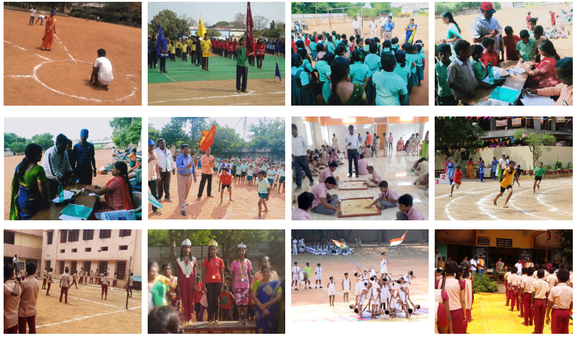
Zonal Level Sports Meet
15 november 2018 and 16 november 2018
Serial .Number |
Date of the Events |
Time of the Events |
Name of the Events |
Collection of Photography |
Serial .Number 1 |
Date 15 november 2018 |
Time 8.00 YE M |
Name of the Events Preparation of play ground |
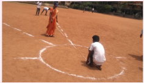 |
Serial .Number 2 |
Date 15 november 2018 |
Time 9.00 YE M |
Name of the Events Inauguration |
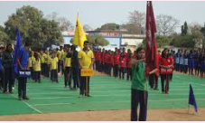 |
Serial .Number 3 |
Date 15 november 2018 |
Time 9.15 YE M |
Name of the Events Instructions given by Teachers |
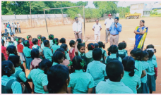 |
Serial .Number 4 |
Date 15 november 2018 |
Time 9.30 YE M |
Name of the Events Registration for events |
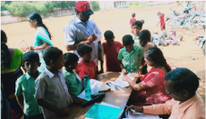 |
Serial .Number 5 |
Date 15 november 2018 |
Time 9.45 YE M |
Name of the Events Allotment report for team games. |
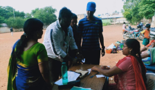 |
Serial .Number 6 |
Date 15 november 2018 |
Time 10.00 YE M
|
Name of the Events Inauguration of sports events |
|
Serial .Number 7 |
Date 15 november 2018 |
Time 11.00 YE M |
Name of the Events Indoor games |
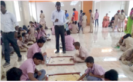 |
Serial .Number 8 |
Date 15 november 2018 |
Time 2.30 PM |
Name of the Events Individual events |
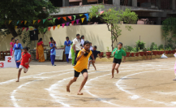 |
Serial .Number 9 |
Date 16 november 2018 |
Time 10.30 YE M |
Name of the Events Team events |
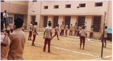 |
Serial .Number 10 |
Date 16 november 2018 |
Time 4.30 PM |
Name of the Events Prize Distribution |
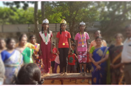 |
Serial .Number 11 |
Date 16 november 2018 |
Time 5.15 PM |
Name of the Events Closing ceremony |
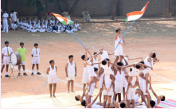 |
Serial .Number 12 |
Date 16 november 2018 |
Time 06.00 PM |
Name of the Events National Anthem |
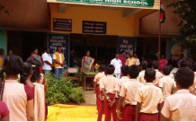 |
Activity
Using the time table given below, fill in the trip schedule, date and time according to your school.
Schedule for going an excursion and parental permit letter
Serial. Number |
Name of the Events |
Date |
Time |
Serial. Number 1 |
Instruction given by ye class teacher about an excursion |
Express the Date |
Express the Time |
Serial. Number 2 |
Receiving parents’ permission Letter |
Express the Date |
Express the Time |
Serial. Number 3 |
Preparation of the name list by the class teacher who are going for an excursion |
Express the Date |
Express the Time |
Serial. Number 4 |
Instruction given by Head Master |
Express the Date |
Express the Time |
Serial. Number 5 |
Time to start and excursion |
Express the Date |
Express the Time |
Serial. Number 6 |
Time to reach the first destination |
Express the Date |
Express the Time |
Serial. Number 7 |
Lunch Break |
Express the Date |
Express the Time |
Serial. Number 8 |
Time to reach second destination |
Express the Date |
Express the Time |
Serial. Number 9 |
Tea break |
Express the Date |
Express the Time |
Serial. Number 10 |
Time of return to school |
Express the Date |
Express the Time |
I am willing to send my child for an excursion
Class Teacher signature
Parent’s signature
Activity
ye fixture given below illustrates the team allocation for the game of kabaddi.
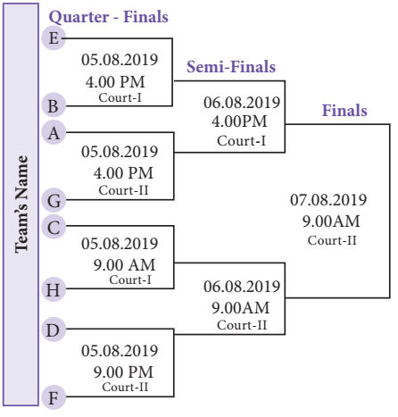
Instruction
Using the fixtures, complete the table with the instruction given above:
Serial. Number |
Match Name |
Date |
Time |
Participating Teams |
Venue of the match |
Serial. Number Serial. Number 1 |
Quarter Finals 1 |
Express the Date |
4.00 PM |
Express the Participating Teams |
Express the venue of the match |
Serial. Number Serial. Number 2 |
Express the match name |
05 08 2019 |
Express the Time |
YE and G |
Express the venue of the match |
Serial. Number 3 |
Express the match name |
Express the Date |
9.00 PM |
Express the Participating Teams |
Court 1 |
Serial. Number 4 |
Quarter Finals 4 |
Express the Date |
Express the Time |
D and F |
Express the venue of the match |
Serial. Number 5 |
Semi Finals 1 |
06 08 2019 |
Express the Time |
Express the Participating Teams |
Express the venue of the match |
Serial. Number 6 |
Express the match name |
Express the Date |
Express the Time |
Express the Participating Teams |
Court 2 |
Serial. Number 7 |
Final |
Express the Date |
Express the Time |
Express the Participating Teams |
Express the venue of the match |
1) Semi Finalist team Name
ye) dash Versus dash
b) dash Versus dash
2) Winner of the Match dash
Activity
Complete the partially filled seventh class model timetable using the instruction given below.
Instruction
Periods Allotment
Subject Tamil |
7 Periods |
Subject English |
7 Periods |
Subject Maths |
7 Periods |
Subject Science |
7 Periods |
Subject Social Science |
7 Periods |
Subject Physical Education |
2 Periods |
Subject Drawing |
1 Period |
Subject Music |
1 Period |
Subject Library |
1 Period |
Total |
40 Periods |
seventh Time Table
Days |
Periods |
|
|
|
|
|
|
|
|
1 |
2 |
3 |
4 |
5 |
6 |
7 |
8 |
Monday |
Tamil |
Fill the periods |
English |
Fill the periods |
Science |
Social Science |
Fill the periods |
English |
Tuesday |
Tamil |
Fill the periods |
English |
Fill the periods |
Fill the periods |
Social Science |
Social Science |
Maths |
Wednesday |
Tamil |
Tamil |
Maths |
Maths |
Science |
Social Science |
Physical Education |
Fill the periods |
Thursday |
Tamil |
Tamil |
Maths |
Maths |
Fill the periods |
Fill the periods |
Fill the periods |
Fill the periods |
Friday |
English |
English |
Maths |
Fill the periods |
Fill the periods |
Fill the periods |
Science |
Science |
Can you think of ye day in our life which goes without problem solving? No, In our life we are bound to solve problems. In our day to day activity such as browsing some web pages, purchasing something from ye general store and making payments, depositing few in school, or withdrawing money from an ye t m involves some kind of problem solving. It can be said that whatever activity ye human being or machine does for achieving ye specified objective comes under problems solving. During the process of solving any problem, one tries to find the necessary steps to be under taken in ye sequence.
Often the best way to understand ye problem is to draw pictures. Pictures often provide us with ye more complete idea of the situation than ye series of short words or phrases can. However, pictures combined with text provide an extremely powerful tool for communication and problem solving.
ye flowchart is ye pictorial representation and it gives an idea of instructions to perform ye task or calculation. They are widely used in multiple fields to prepare ye document, study plan, improve and communicate often complex process clearly as it is easy to understand ye diagram. In the flowchart, each shape has ye particular meaning. They are given in the following table.
Shape |
Name |
Meaning |
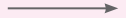 |
Name Flowline |
Meaning Used to connect shapes and indicates the flow of instructions. |
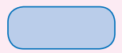 |
Name Terminal |
Meaning Used to represent the Start and End of the task. |
Name Input or Output |
Meaning Used to the instruction to be read or displayed are described inside. |
|
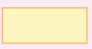 |
Name Processing |
Meaning Used for calculating or indicating normal process of flow step. |
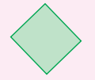 |
Name Decision |
Meaning Used for any logic or comparison of an operation. The flow direction chosen depends on whether answer to the questions is “Yes” or “No” |
To understand better, let us see how we can apply flowchart practically.
Sequential flowchart
ye flowchart describes the operations and in what sequence the problem is to be solved.
Situation 1
Scan QR Code from your textbook to view related digital content, as shown in the pictures below.
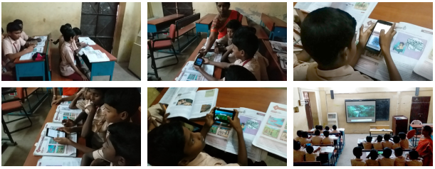
First, let us write ye step by step process to scan QR code:
Step by step process
First, let us write ye step by step process to scan QR code:
1. Take correct textbook page on which required QR code were situated.
2. Open QR code scanner on your mobile or tab.
3. Scan QR code to view related digital content.
4. View digital content.
Now, let us write ye sequence flowchart for this given in figure beside.
Example 6.1
Construct an appropriate flowchart for depositing ye sum of money in an YETM using the instruction given below.
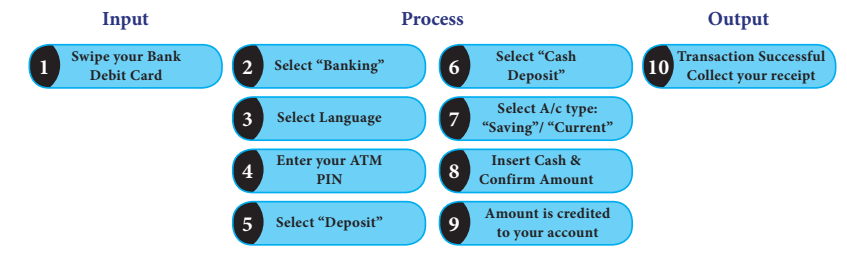
Solution
![The description of the flowchart begins start is written and followed by a flowline arrow mark facing downward to the Select “Banking” followed by a flowline arrow mark facing downward to the Select Language followed by a flowline arrow mark facing downward to the Enter your yeT M PIN followed by a flowline arrow mark facing downward to the Select “Deposit” followed by a flowline arrow mark facing downward to the Select “Cash Deposit followed by a flowline arrow mark facing downward to the Select Account type: Saving or “Current” followed by a flowline arrow mark facing downward to the Insert Cash and Confirm Amount followed by a flowline arrow mark facing downward to the followed by a flowline arrow mark facing downward to the Amount is credited followed by a flowline arrow mark facing downward to the Transaction Successful Collect your receipt is given followed by a flowline arrow mark facing downward to the end is written The description of the flowchart ends.](images/image-128.png)
Conditional flowchart
Situation 2
Construct the flowchart to find the sum of given two numbers. (To achieve this, first the two numbers have to be received and kept in two places, under two names. Then the sum of them is to be found and printed. The flow chart for this is given in figure beside)
![The description of the flowchart begins start is written in rounded rectangle followed by a flowline arrow mark facing downward to the parallelogram in which Input ye and B is given followed by a flowline arrow mark facing downward to the rectangle shape in which C=ye PLUS B is written followed by a flowline arrow mark facing downward to the parallelogram in which view Print C is given followed by a flowline arrow mark facing downward to the rounded rectangle in which end is written The description of the flowchart ends.](images/image-129.png)
In the above flow chart, there is ye special meaning in writing C equal ye + B. Here, the value of C indicates the sum of YE and B values. For example, if we input ye equal 325 and B equal 486 then the value of C will be printed as 811. Let us learn more from following examples.
Example 6.2
Construct the flow chart to find whether the given number is ye positive integer or negative integer or zero and write step by step process.
Solution
In this question we are asked to find the given integer x is ye positive number or ye negative number or ye zero. For that, first we have to assign the value of x and check whether x is greater than 0. If ‘yes’, we will print “x is ye Positive number”. If ‘no’ then we will check again if the value of x is less than 0. If ‘yes’, we will print “x is ye Negative number”. If ‘no’, then we will print “x equal zero”.
Step by step process
![The description of the flowchart begins start is written in rounded rectangle followed by a flowline arrow mark downward to input X followed by a flowline arrow mark right and the left side of rhombus in which to x greater than 0 is given If ‘yes’ print x is a Positive number” followed by a flowline arrow mark right side and the downward of rhombus to Check again x less than0 If ‘yes’ print x is a Negative number” If ‘no’ print “x is equal to zero followed by the three arrow marks from print instructions and finally end is written The description of the flowchart ends](images/image-130.png)
Verifying the condition X greater than 0 |
Verifying the condition X less than 0 |
Verifying the condition X equal 0 |
For ye particular value X equal to 7926 7926 greater than 0 Yes X is ye Positive number
|
For ye particular value X equal to minus 2589 Minus 2589 greater than 0 No Minus 2589 less than 0 Yes X is ye Negative number
|
For ye particular value X equal to 0 0 greater than 0 No 0 less than 0 No X is equal to zero
|
Example 6.3
Construct the flowchart to explain the process of finding the greatest number among the given 3 natural numbers and write step by step process.
Solution
In this question, we are asked to find the greatest of the given 3 numbers. For that, first we have to assign the values of ye, b and c and then check whether ye is greater than b. If ‘yes’, we will check again if the value of ye is greater than c. If ‘yes’, we will print the value of ye. If ‘no’, then we will check again if the value of b is greater than c. If ‘yes’, we will print the value of b. If ‘no’, then we will print the value of c.
Step by step process
![The description of the flowchart begins start is written in rounded rectangle followed by a flowline arrow mark downward to input a, b, and c followed by a flowline arrow mark downward of parallelogram in which a greater than b is given followed by a flowline arrow mark right side and left side of rhombus ‘if yes’ print a greater than c ” followed by a flowline arrow mark left side and the downward of rhombus ”to print a and by checking a greater than b If ‘no’ b greater than c “ is followed by the downward and right side arrow marks‘ if yes’ print b and by checking b greater than c and a greater than c, If ‘no’ print c is given followed by the three arrow from print instructions and finally end is written The description of the flowchart ends](images/image-131.png)
Verifying the condition ye greater than b |
Verifying the condition b greater than c |
Verifying the condition ye greater than c |
For ye Particular value ye equal to 75, b equal to 56 and c equal to 20 check is 75 greater than 56 ‘yes’ check again 75 greater than 20 ‘yes’ Print 75.
|
For ye Particular value ye equal to 68, b equal to 82 and c equal 45 check is 68 greater than 82 ‘no’ check again 82 greater than 45 ‘yes’ Print 82
|
For ye Particular value ye equal to 185, b equal to 393 and c equal to 852 check is 185 greater than 393 ‘no’ check again 393 greater than 852 ‘no’ Print 852.
|
Situations 3
Are you familiar with the internet? If you want to know how to search in the Internet, then you have to find the rights search engine, type in your search keywords as accurately as possible, and browse through the results to find the one you want. Let us earn more about this from the following algorithm and flowchart.
Step by Step process
![The description of the flowchart begins start is written followed by Open your web browser with downward arrow to Do you know the required URL If yes enter the required URL then enter an URL in the address box or if no Enter keywords in the search engine box with commands followed by a downward arrow to Click the link found in the browser window to further information followed by a downward arrow If yes , download your materials (text or image or audio or video or web links). if no continue search. if download completed finally end is written The description of the flowchart ends](images/image-132.png)
Exercise 6.1
1. Match the following:
Serial. Number |
Symbols |
Uses |
Serial. Number 1 |
Uses ye) Input or Output |
|
Serial. Number 2 |
Uses b) c equal to ye + b |
|
Serial. Number 3 |
Uses c) Start or End |
|
Serial. Number 4 |
Uses d) ye greater than equal 0 |
|
Serial. Number 5 |
Uses e) It shows direction of flow |
2. The steps of withdrawing cash from your saving bank account using YE T M card are explained in the figures given below. Construct an appropriated flow chart.
Serial. Number 1 |
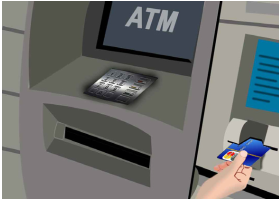 |
Insert an ye T M debit or credit card |
Serial. Number 2 |
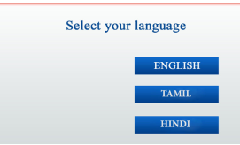 |
Select your language. |
Serial. Number 3 |
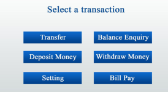 |
Select your transaction. |
Serial. Number 4 |
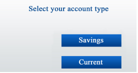 |
Select your account type |
Serial. Number 5 |
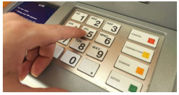 |
Enter the pin number |
Serial. Number 6 |
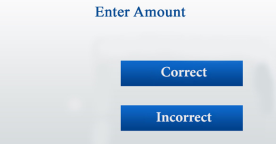 |
Enter the amount do you want to withdraw. |
Serial. Number 7 |
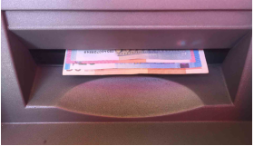 |
Collect your money. |
3. Using given step by step process to recharge mobile, draw ye sequence flowchart.
Step by step process
4. Complete the direction of the flowchart using arrows for the flow chart explaining the traffic rule given below.
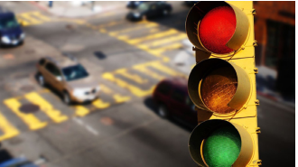
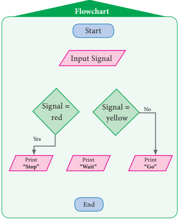
5. Complete the given flowchart, input names of things and check whether it is living or non living.
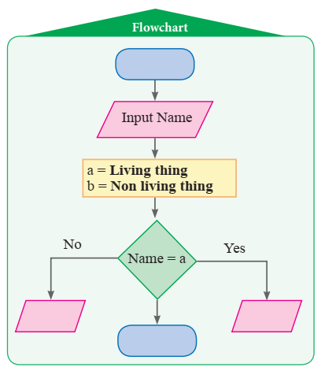
6. Complete the given flowchart.
1) Fill in the flow chart to print the average mark by giving your 1st term or 2nd term marks as inputs.
![The description of the flowchart begins ye blank rounded rectangle followed by a flowline arrow mark facing downward to the parallelogram in which Input T,E,M,S,SS is given followed by a flowline arrow mark facing downward to the rectangle shape in which Average equal (T + E + M + S + SS) divided by 5 is written followed by a flowline arrow mark facing downward to the blank parallelogram is given followed by a flowline arrow mark facing downward to the blank rounded rectangle The description of the flowchart ends.](images/image-136.png)
2) Construct the flow chart to print teachers comment as “very good” if your average mark is above 75 out of 100 or else, as “still try more” can be inserted in the flow chart with earlier one.
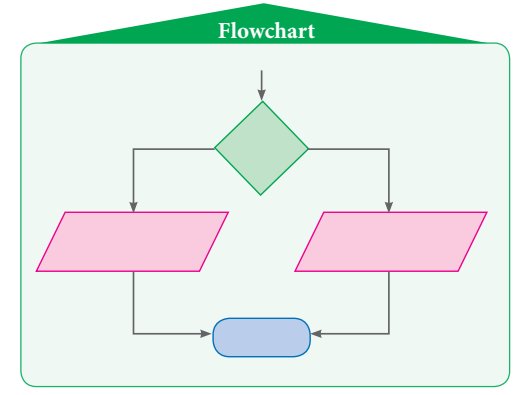
7. YE merchant calculates the cost Price C P and the selling Price S P of the product bought by him. Construct the flow chart to print ‘PROFIT’ if the selling price S P is more than the cost price C P or else ‘LOSS’.